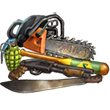
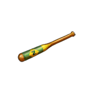
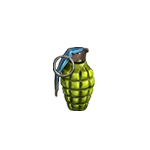
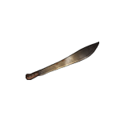
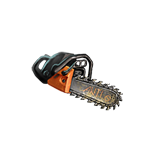
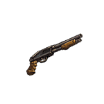

Получено: файл; исходный URL. Иллюстрация «Коллекция Анти-зомби» из каталога ViveR_9, сопоставлена по точному названию; возможны отличия версий. Оригинальный файл без перекодирования; авторство отдельно не установлено. Страница: источник.

Коллекция Анти-зомби
Браузерная социальная версия; историческая статья; дата редакции неизвестна- Тип
- Коллекции
- Версия и дата
- Браузерная социальная версия; историческая статья; дата редакции неизвестна
Элементы коллекции
















Данные по источнику · Браузерная социальная версия · историческая статья; дата редакции неизвестна
Предварительно: один материал, требуется сверка. Требуется сверка.
- Состав (источник Zombie-island)
- Бейсбольная бита; Граната; Мачете; Бензопила; Шотган.
- Награда (источник Zombie-island)
- 1 Огонь; 300 Опыт.
- Где копать Коллекцию Анти-зомби в Зомби Ферме лопатами
- Сторож с мозгами; Сторож; Альпийский дом; Серьёзный коттедж; Семейное гнездо; Особняк; Дом знаний; Ангар за зомбаксы; Ангар за монеты; Колизей; Вождь; Карусель; Японский храм; Флаг СССР; Флаг Беларуси; Валентинка; Снежный куст; Кактус; Лавочка в снегу; Ограда; Зуб дракона; Ледяной слоник; Ледяной забор; Снежная башня; Светильник; Царь; Фонтан; Букет; Часовня; Фонарь раз; Газон; Ограда раз; Буква В; Буква Н; Буква С; Голубой шар; Красный шар; Желтый шар; Зонтик; Осенний зонт; Летний зонт; Букет из шариков.
- Коллекция Анти-зомби выпадает из мешков Кладоискателей
- Кладоискатель; Кладоискатель с мозгами.
- Коллекцию Антизомби можно найти в ценностях и сокровищах Зомби Фермы
- Связка бревен секвойи; Связка бревен пал.; Сундук Чудовища; Варежки; Груда чер. мрамора; Груда зел. мрамора; Груда бел. мрамора; Коллекционная посылка; Коллекционный; Коллекционер; Дом привидений; Цирковой шатер; Мавзолей.
- Коллекция Анти-зомби попадается на Пиратских островах Зомби Фермы
- Пиратский сундук.
- Коллекция Анти-зомби попадается при колдовании Палочками дома
- Палочка-выручалочка; Подземный кактус.
Данные по источнику · ВКонтакте, ZombieS Forever · дата редакции не установлена
Предварительно: Историческая фанатская страница; независимость от других источников не установлена. Возможны различия версий и дат.. Требуется сверка.
- Награда по ZombieS Forever
- 300 опыта и огонь
- Места получения: выборка из источника
- Пирамида, вождь, валентинка, особняк, Японский храм и др.
Данные по источнику · браузерная версия; платформа в ответе не уточнена · Дата на странице (формат не уточнён): 03/04/2015
Предварительно: Ответ справочного сайта; достоверность и независимость от других фанатских источников не установлены. Возможны различия редакций и версии.. Требуется сверка.
- Ответ источника
- Антизомби Зомби Ферма – это одна из игровых коллекций, после сбора которой модно заполучить один костер с огнем и 300 баллов опыта к рейтингу. Все элементы, входящие в состав этой коллекции, можно выкопать бесплатными лопатами под оградами, альпийским домом, особняком, зубом дракона, ангаром, школьным автобусом, каруселью, кактусом, домом знаний, разноцветными воздушными шарами, трибунами и множеством других декораций и построек. Также коллекция иногда находится в одном из мешков, оставленных кладоискателями, или в некоторых ценностях, в том числе под грудами зеленого и белого мрамора, в сундуке чудовища, варежках.
Данные по источнику · браузерная версия; платформа не указана · дата редакции не установлена
Предварительно: Содержимое списка: изображения и колонки могут терять смысл при извлечении текста; отдельная страница и дата не проверены. Подписи alt иногда ошибочны.. Требуется сверка.
- Текст карточки из каталога
- 300 опыта и Огонь Бейсбольная бита Граната Мачете Бензопила Шотган Где копать: Шарики Колизей, Сторож Бассейн, Пирамида, Столб-Символ, Столб Золотой, Рука терминатора, Фонтан, Часовня, Полукруглый забор, Костяной забор, Лилии (декор), каменные "В" "Е" "С" "Н" "А" )
Данные по источнику · Мой Мир (Mail.ru); историческая таблица · дата редакции не установлена
Предварительно: Источник сам использует знаки вопроса; не следует считать такие места подтверждёнными. Возможны изменения патча и платформы; независимость от других справочников не доказана.. Требуется сверка.
- Название в источнике
- Коллекция анти-зомби
- Где копать
- Сторож Бассейн, Пирамида, Столб-Символ, Столб Золотой, Рука терминатора, Фонтан, Часовня, Полукруглый забор, Костяной забор, Лилии (декор), каменные "В" "Е" "С" "Н" "А" )
- Награда
- 300 опыта и Огонь
Данные по источнику · браузерная версия; на сайте указана игра ВКонтакте · дата редакции не установлена
Предварительно: Исторический текст; сильно совпадает со справкой Zommbie.at.ua, независимость не доказана. Отрицания и доступность могут измениться с патчем.. Требуется сверка.
- Где искать по странице «Зомбастики»
- Валентинка, вождь, сторож, особняк, букет, часовня, рука терминатора, японский храм, ограда, кактус, снежный куст, карусель.
Данные по источнику · историческая браузерная версия, платформа не указана · 10.01.2014 — дата в каталоге; дата редакции материала неизвестна
Предварительно: Фанатский список без вероятностей и уточнения площадки; независимость от других источников не установлена.. Требуется сверка.
- Где искать по списку сайта
- Валентинка, вождь, сторож, особняк, букет, часовня, рука терминатора, японский храм, ограда, кактус, снежный куст, карусель
- Оговорка
- Список может относиться к разным условиям, инструментам и периодам игры; не доказывает гарантированное выпадение. Заявления «только» и «невозможно» относятся лишь к времени и версии источника.
Связанные сущности
нет проверенных связей — требуется сверка.
Источники
- прочитано: Zombie-island.moy.su; проверка 2026-11-21
- Прочитана статья или строка таблицы; требуется сверка
- FatalGame: прочитан отдельный ответ; дата на странице 03/04/2015
- ZOMBIA: прочитана карточка в списке
- Ссылка на отдельную страницу; отдельно не проверена
- Zombiemail: строка таблицы коллекций; Мой Мир
- Зомбастики: прочитана соответствующая строка; возможная копия другого справочника
- ViveR_9: изображение в каталоге коллекций; совпадение названия
- zommbie.at.ua: где искать коллекции